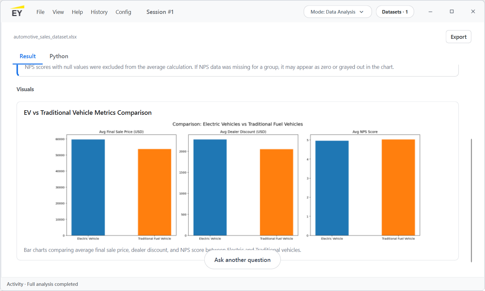
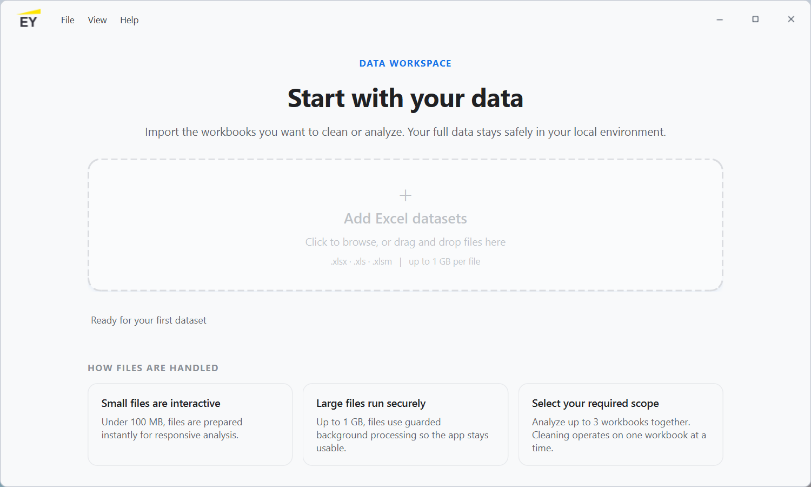
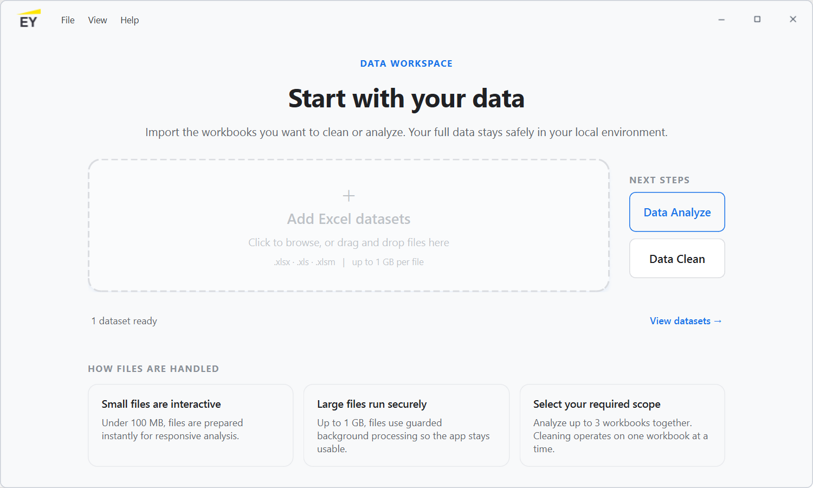
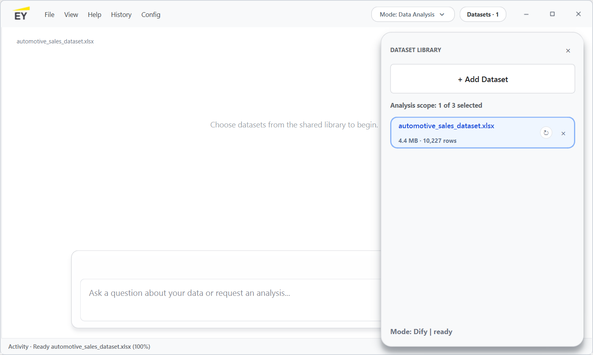
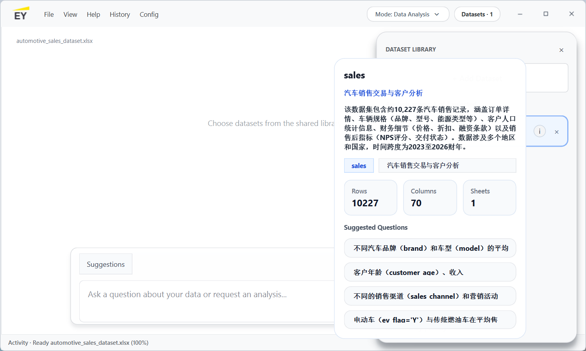
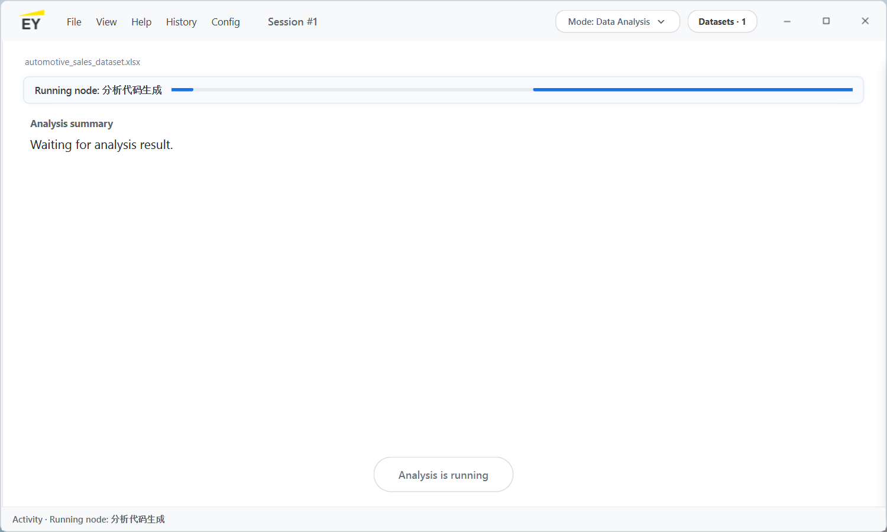
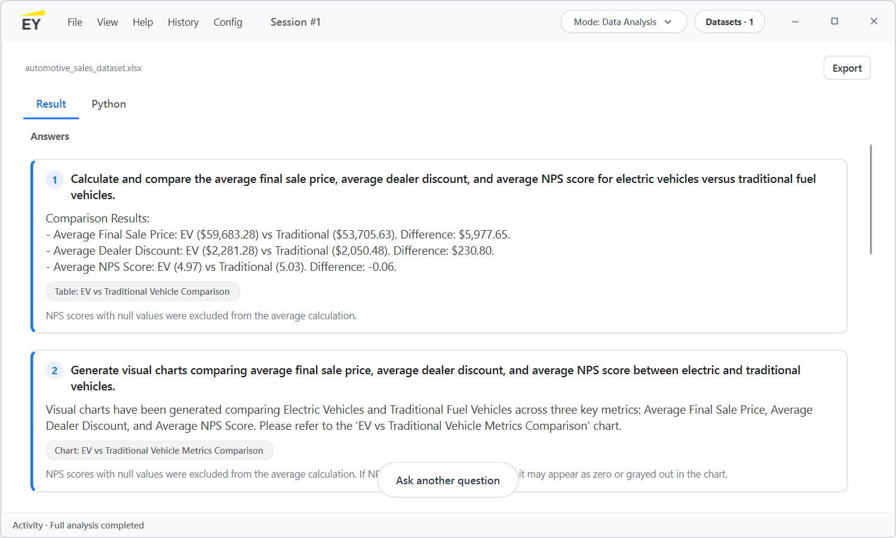
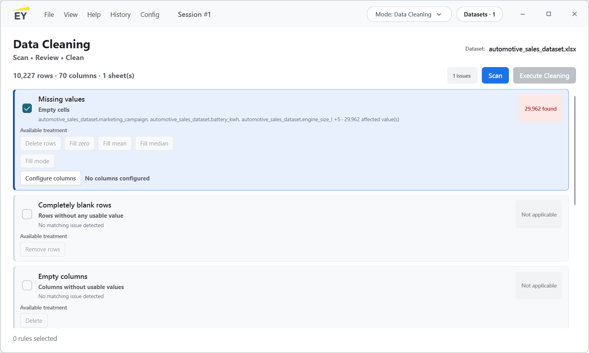

面向财务审计与企业数据分析场景的桌面端 AI 数据分析助手。
用自然语言提出问题，由 Dify 生成分析逻辑，在本地完成数据处理、代码校验与结果呈现。

安永数智助手（EY intelligent DA Client）将自然语言需求、Dify 工作流、Python 分析代码、本地数据执行和结果看板整合在一个桌面端产品中。它既服务财审数据核查，也支持业务与财务趋势、异常、变化的快速分析。
同一套工具既可以服务内部财审与数据分析团队，也可以作为客户项目中的轻量化、可部署、可演示的数据分析解决方案。
安永数智助手的价值不仅在于替代部分手工分析，更在于把专业判断、数据能力和 AI 工具化能力结合起来，形成可复用、可展示、可拓展的数字化服务资产。
当前版本采用 PySide6 构建 Windows 桌面应用，结合 Pandas、DuckDB、PyArrow、Matplotlib 等数据处理能力。Dify 负责理解需求和生成代码，客户端负责数据画像、代码合同校验、本地执行、错误修复与结果渲染。






